The Boys
Power corrupts. Vought sells it.
Gallery
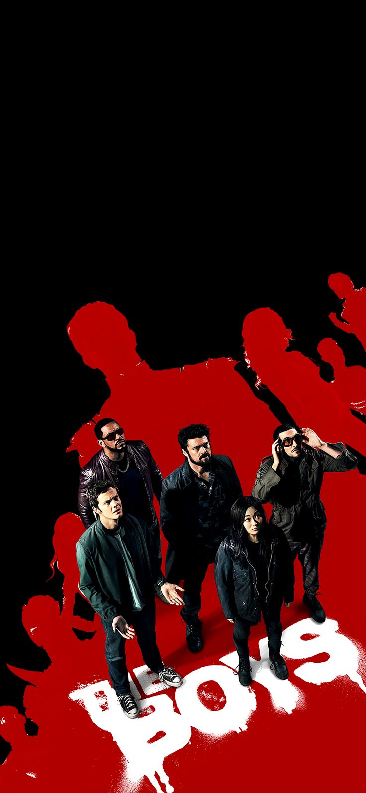
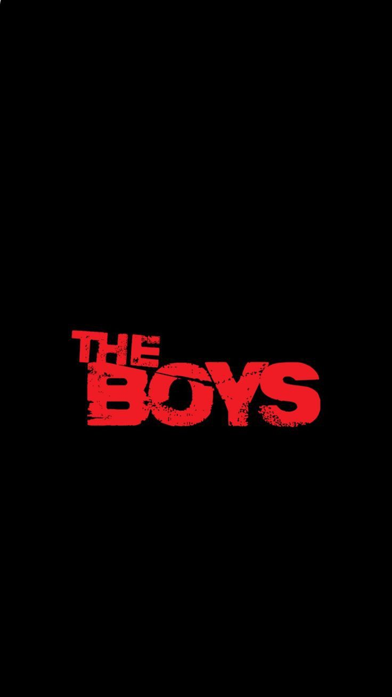
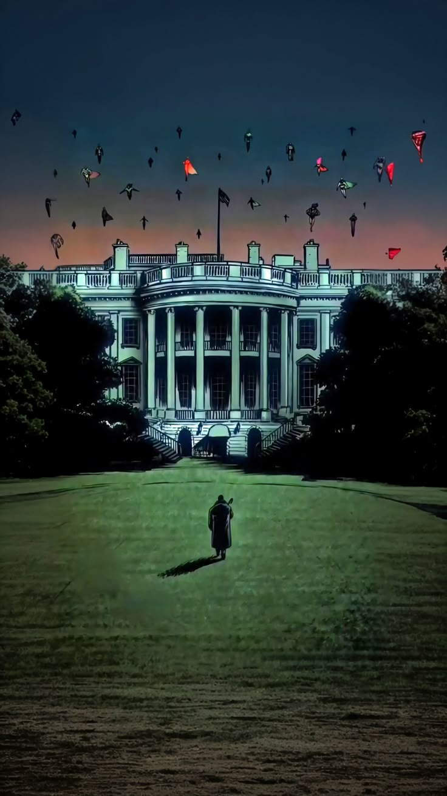
Supes vs Testosterone
In The Boys, supes are not perfect heroes. They are celebrities, weapons, products, and political tools. The show explores what happens when extreme power mixes with ego, violence, fame, insecurity, and corporate protection.
About The Show
The Boys is a dark superhero satire set in a world where superheroes are controlled by Vought International. These heroes are marketed as noble protectors, but many are corrupt, violent, selfish, and protected by money, media, politics, and public relations.
The story follows a group of humans called The Boys, who fight against corrupt supes and expose the truth behind Vought’s empire.
About The Supes
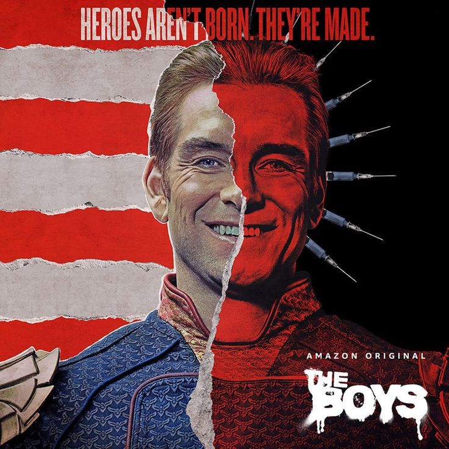
Homelander
Homelander is the leader of The Seven and Vought’s most powerful symbol. He appears patriotic and heroic, but underneath he is cruel, unstable, narcissistic, and obsessed with control.
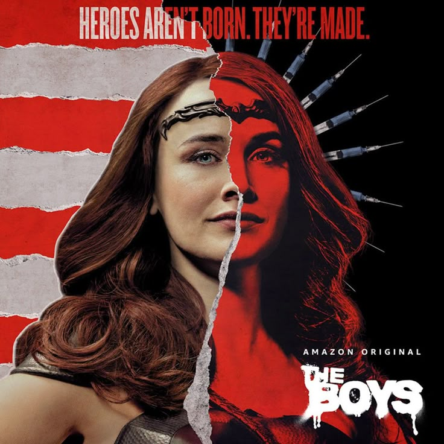
Queen Maeve
Queen Maeve is a powerful and experienced member of The Seven. She is cynical because of Vought’s corruption, but still has courage and morality.
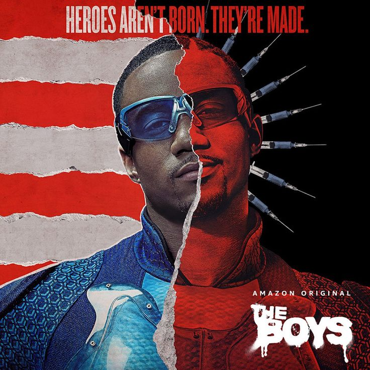
A-Train
A-Train is the fastest man in the world. His story shows fame, addiction, insecurity, pressure, and how Vought treats supes like products.
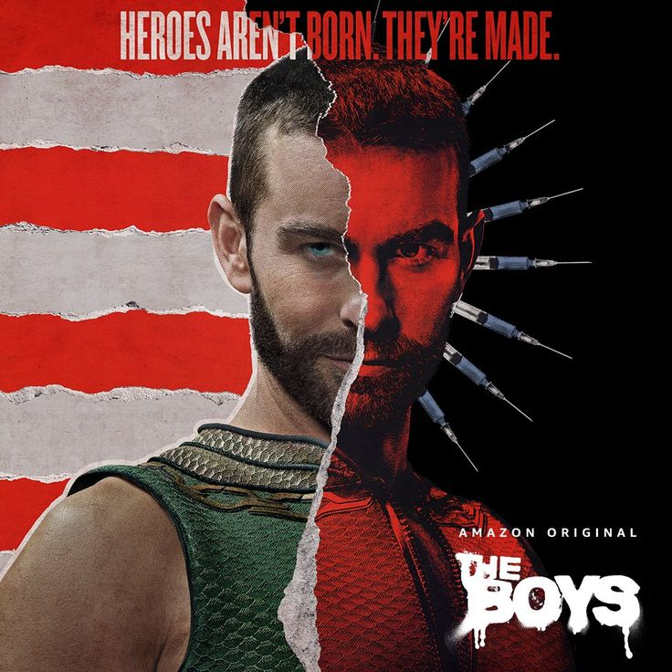
The Deep
The Deep has aquatic powers and can communicate with sea creatures. He is insecure, desperate for approval, and often exposes celebrity hypocrisy.
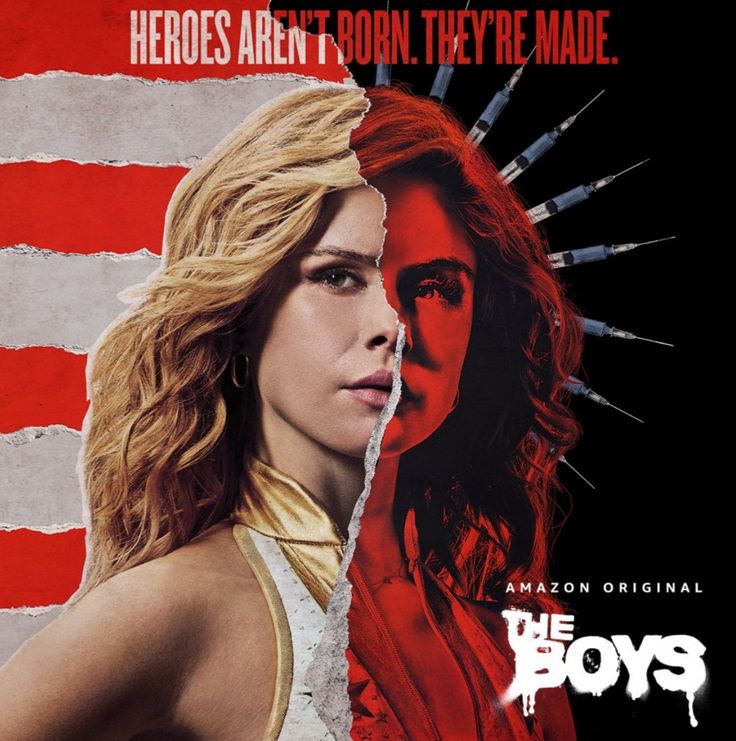
Starlight
Starlight starts as an idealistic hero. After joining The Seven, she discovers Vought’s corruption and becomes one of the few supes willing to fight back.
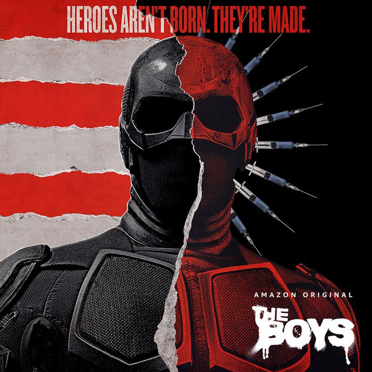
Black Noir
Black Noir is silent, mysterious, deadly, and loyal to Vought. His quiet nature hides tragedy, violence, and a dark connection to superhero history.
About The Boys
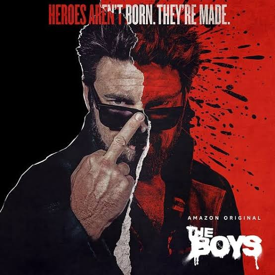
Billy Butcher
Billy Butcher is the ruthless leader of The Boys. He hates supes, especially Homelander, and is willing to cross dangerous lines to destroy Vought.
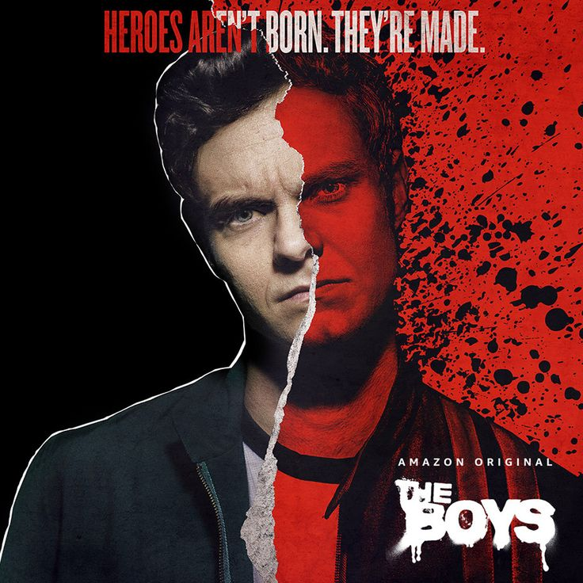
Hughie Campbell
Hughie is an ordinary man pulled into the fight after tragedy. He is the emotional heart of the team and often questions revenge and morality.
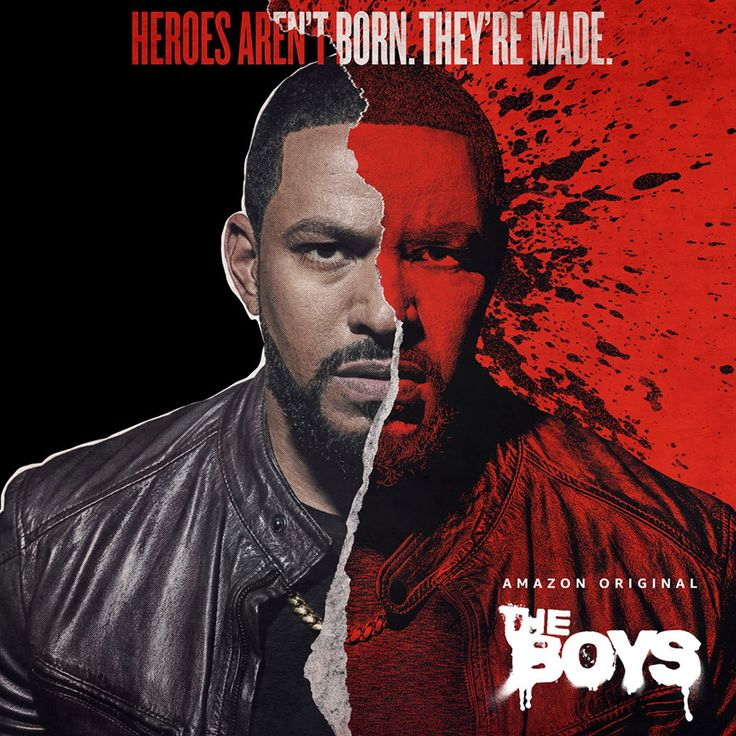
Mother’s Milk
Mother’s Milk, also known as MM, is disciplined, loyal, responsible, and brings structure and morality to The Boys.
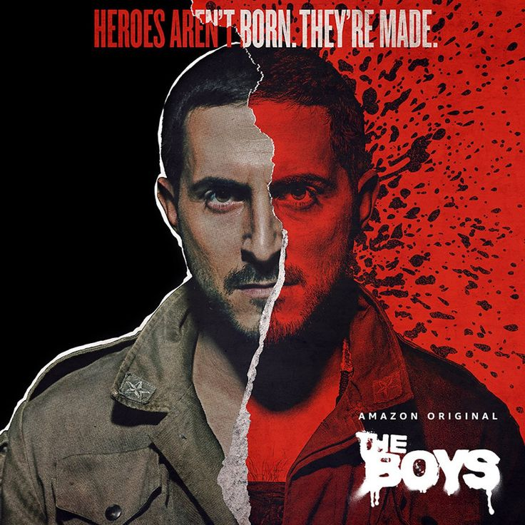
Frenchie
Frenchie is a creative weapons expert with a criminal past. He is chaotic, emotional, brilliant, and deeply loyal.
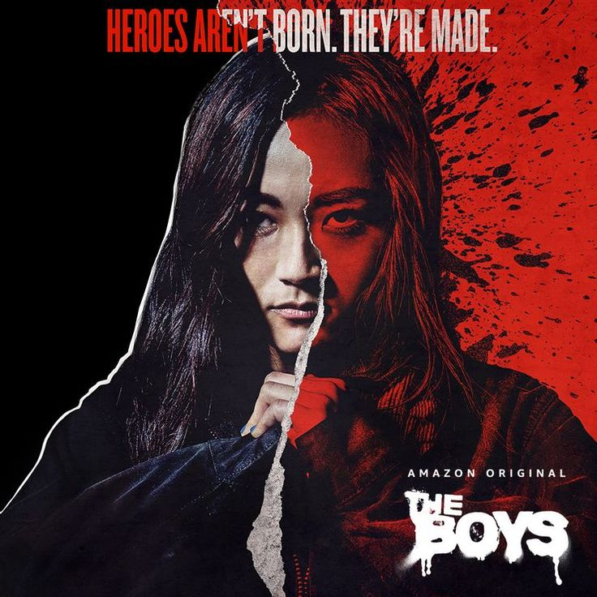
Kimiko
Kimiko is powerful, deadly, and deeply traumatized. Though mostly silent, she is one of the most emotional and loyal members of the group.
Note About Compound V
Compound V is the substance responsible for creating most superhuman abilities. It represents artificial power controlled by corporations. In the show, Vought turns power into a product, a weapon, and a business.